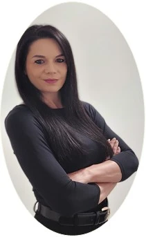
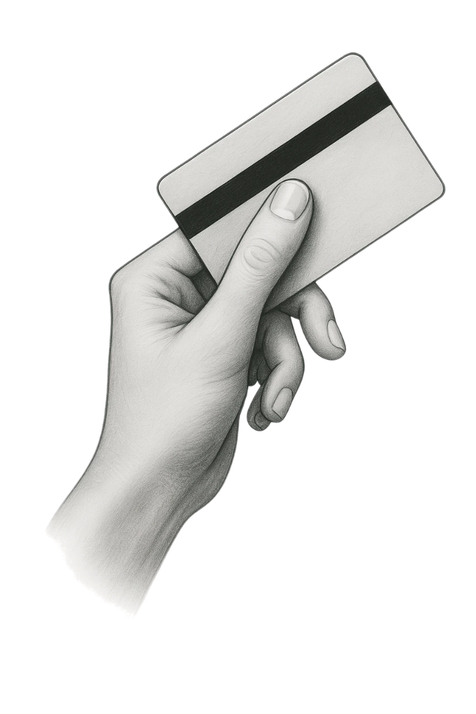
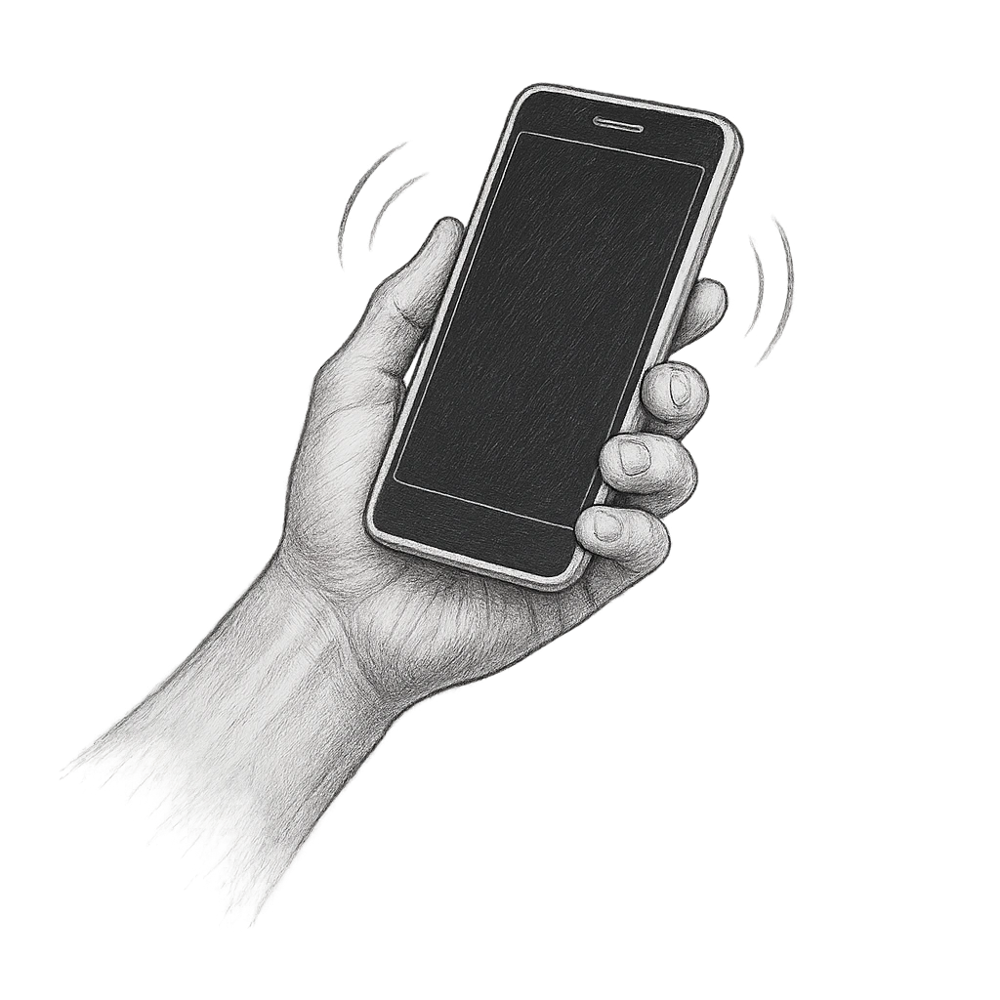
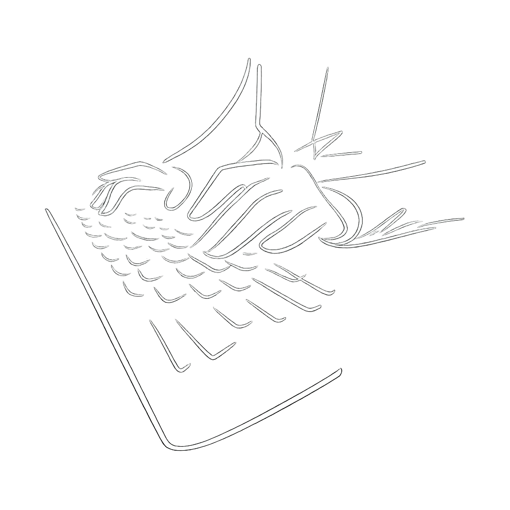
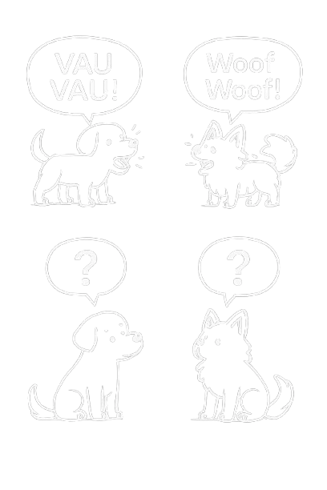
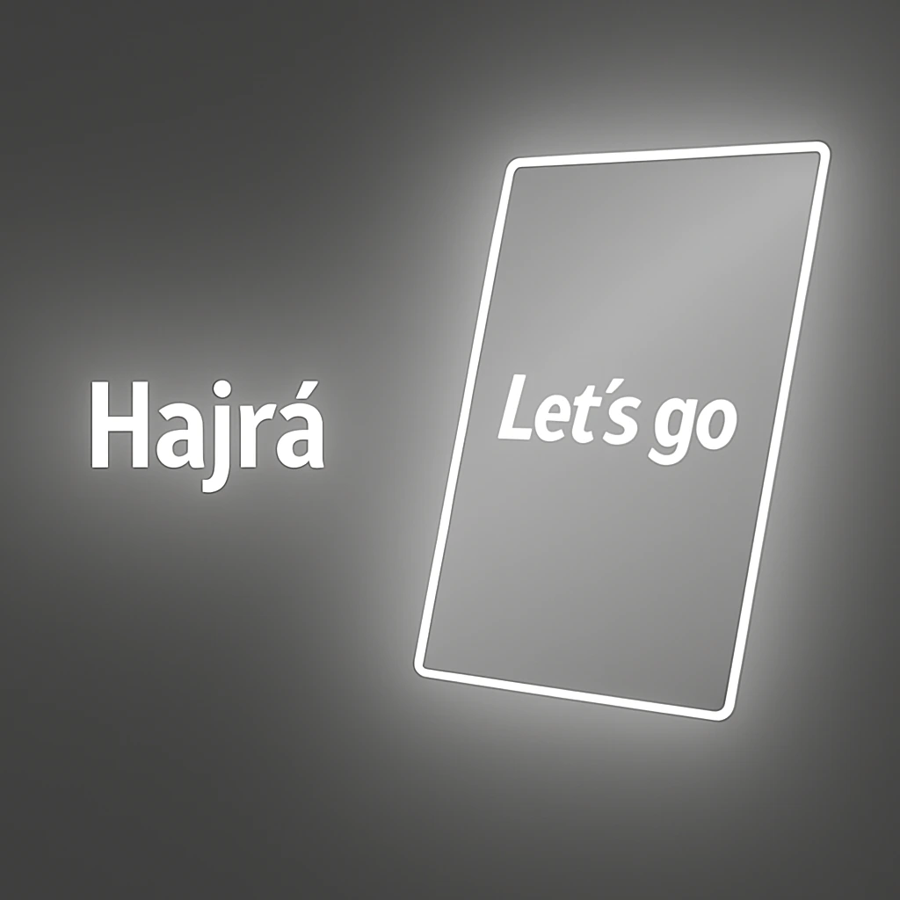

Kommunikáció központú és személyre szabott angol nyelvoktatás kezdőtől felsőfokig, egyéni és csoportos kereteken belül, személyesen vagy online.

8 évig éltem Londonban, ahol jogi szakon diplomáztam. Ezen felül Cambridge CELTA angol nyelvtanári oklevéllel és sok éves üzleti és management tapasztalattal rendelkezem nemzetközi környezeteben. Utóbbi esetében a munkavégzés során, a kapcsolattartás, a kapcsolódó dokumentációk stb. kizárólag angol nyelven történtek.
Óráimon nagy hangsúlyt fektetek a beszéd központúságra, pontosabban arra, hogy Te beszélj minél többet és ezt egyre folyékonyabban és kevesebb hibával tedd. A nyelvtan- és szókincs fejlesztés rávezetéses módszerrel történik; segítek, hogy Te magad fejtsd meg az egyes nyelvtani szerkezetek logikáját vagy az új szavak jelentését. Így sokkal hatékonyabban fogsz fejlődni és nagyobb lesz a sikerélményed is.
Ezekhez csak angolul fogunk beszélgetni, akkor is, ha kezdő vagy, mert így fogsz angolul gondolkodni és elkerülni a fejben fordítást.
Óráim egyénre szabottak, mindegyikre külön készülök figyelembe véve tanítványaim céljait, érdeklődési köreit és tanulási preferenciáit.
Budapest 13. kerület,
Duna Pláza mellett
Google Meet, Zoom
Kedvezőbb áron,
barátokkal/kollegákkal
Gondoltál már rá, mennyi időt spórolhatsz az utazáson, ha online tanulsz?
Az óráimon ugyanazt a magas színvonalú oktatást kapod, mint személyesen, csak a saját otthonod kényelméből. Az utazásra szánt időt töltsd inkább tanulással.
Fogjatok össze rokonokkal, barátokkal vagy kollégákkal, ha hasonló szintű az angolotok és jelentkezzetek be csoportos órára, így tudok a legkedvezőbb egyéni árat biztosítani. Tegyétek ezt akár online, így nem akadály, ha az ország, esetleg a világ különböző pontjain éltek.



A személyes és online órák tartalma, módszere és hatékonysága teljesen megegyezik. A személyes órákon is végig a laptopomról dolgozunk, minden felhasznált könyvet és segédanyagot digitálisan tárolok, illetve ugyanígy készítek számodra jegyzeteket óra közben. Az online órák során megosztom a képernyőmet, így pontosan ugyanazt látod, mintha élőben ülnél velem szemben.
Sokan idegenkednek az online óráktól eleinte, de csak ameddig ki nem próbálják. Számos tanítványom váltott online órákra és az utazásra szánt időt inkább nyelvtanulással töltik. Sokakkal pedig vegyesen tartunk személyes és online órákat is.
Ne aggódj, nem kell technológiai zseninek lenned. Stabil internetre és egy kamerás, mikrofonos eszközre (laptop, tablet, telefon) lesz csak szükséged. Neked csak egy emailben kapott linkre kell majd kattintanod és nem kell tudnod kezelni a videóhívást vagy annak funkcióit.
Az első óra alkalmával kicsit megismerjük egymást, felmérjük a szintedet, átbeszéljük a céljaid, tanulási preferenciáid és érdeklődési köreid. Ezek alapján megtervezzük a személyre szabott módszereket és tananyagot, amelyek mentén haladunk majd.
Semmit nem szükséges venned! Minden könyvet digitális formában használok, ezeket természetesen számodra is biztosítom, ingyenesen. Ezeken kívül nagyon sok online elérhető segédanyagot (pl. cikkek, videók) fogunk használni.
Fontos megértened, hogy én nem varázsló vagyok, a munkát neked kell elvégezned. Én a számodra megfelelő tanítási módszerekkel, célzott gyakorló feladatokkal tudlak segíteni, amiket, ha elvégzel, biztosan fejlődni fogsz.
A nyelvtanulás hosszú folyamat és sok gyakorlást igényel. Ha az órákon kívül nem foglalkozol vele, akkor sokkal lassabban fogsz eredményeket elérni. Szerencsére számos olyan módszer létezik, amiket be tudsz építeni a mindennapjaidba, akkor is, ha elfoglalt vagy.
Először is ezért ne magadat okold és ne úgy állj hozzá, hogy úgysem sikerül, mert már annyiszor próbáltad. Valószínű, hogy eddig nem a számodra megfelelő módszerekkel tanítottak, így érthető módon egy idő után mindig alább hagyott a lelkesedésed.
Többféle módszer létezik és valóban mindenki különböző, ezért mindenkinél más stratégia fogja elhozni a sikert. A személyre szabott (vagy kiscsoportos) órák lényege, hogy a számodra megfelelő módszerek vannak vegyítve, különböző hangsúlyt fektetve az egyes módszerekre és összhangban az elérni kívánt céljaiddal.
Sokan küzdenek ezzel a problémával. Ennek az az egyszerű magyarázata, hogy sokkal könnyebb megérteni egy, már előre és helyesen összeállított mondatot, mintsem magadtól angolul kifejezni egy gondolatot. A passzív és aktív nyelvtudás mindenkinél elválik, még az anyanyelvünkön is! Gondolj csak bele, meg tudsz érteni egy bonyolult magyar szöveget, de nem biztos, hogy te is ugyanolyan körmondatokban és választékosan meg tudtad volna fogalmazni ugyanazt. Angolul ugyanez fog történni, még haladó és felsőfokon is: mindig lesznek szavak és kifejezések, amiket megértesz, ha hallod, de az aktív szókincsedben nem használod őket.
A kulcs: gyakorlás, gyakorlás, gyakorlás. Óráimon nagy hangsúlyt fektetek a beszédközpontúságra, illetve számos olyan egyszerű módszer létezik, amiket be tudsz építeni a mindennapjaidba. Egy idő után eltűnik a fejben fordítás, beindul az angolul gondolkodás.
Abszolút! Sőt, valószínű, hogy ebben a korban már a belső motivációd hajt, mintsem valamilyen külső körülmény (pl. iskolában kötelező, munkához szükséges, stb.), így a siker is garantáltabb.
Az eddigi legidősebb tanítványom 90 éves volt és online tanult.

Na jó ez igazából így nem igaz, de az igaz, hogy angolul meglepően sokszor eltérőek a hanghatást jelző szavak, mint magyarul. Ilyen példáúl az...
óra ketyegése: tikk takk – tick tock
kacsa: háp háp – quack quack
víz csöpögése: csöp csöp – drip drop
kutya: vau vau – woof woof
csengő hangja: bim bam – ding dong
szószerint nehezen vagy egyáltalán nem lefordítható kifejezések, amelyeket használva az angolok valóban úgy érzik hogy egy nyelvet beszélsz velük
out of the blue → derült égből (váratlanul)
hit the road → útnak indul
on thin ice → kényes, veszélyes helyzetben lenni
get out of hand → elveszti az irányítást
couch potato → lusta emberekre haszálják
